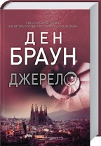

Добро пожаловать в Книжный Клуб
Книжковий клуб об’єднує сьогодні більш ніж 1 000 000 українських родин та пропонує своїм клієнтам сервіс європейського рівня. Інтернет-магазин Клубу пропонує придбати книжки усіх жанрів та напрямків: найкращі новинки художньої, прикладної, навчальної, дитячої літератури.
Книга місяця:

Більбао, Іспанія. Професор симвології Роберт Ленґдон прибуває в музей Гуггенхайма. Всесвітньо відомий мільярдер, винахідник та футуролог, Кірш збирається оголосити про відкриття, яке «змінить обличчя науки назавжди»
Звідки ми прийшли? Куди прямуємо?
Ти певен, що готовий почути відповідь?
Століттями релігії світу намагалися пояснити походження людини. І ось Кірш — колишній учень Роберта Ленґдона, відомий мільярдер та винахідник — здійснює приголомшливе відкриття, яке здатне не просто похитнути, а й спростувати постулати всіх релігій. На сенсаційну лекцію в музеї Ґуґґенгайма запрошено і професора Роберта Ленґдона. Але Кірш не встигає викласти свою неймовірну теорію — його вбивають. Матеріали лекції Кірша захищені 47-значним паролем… Тепер від професора Ленґдона та директорки музею Амбри Відаль залежить, чи дізнається світ таємницю свого походження.
Роздрібна ціна:
181.30 грн
1 рік у Клубі:
130.50 грн
2 роки у Клубі:
123.20 грн
3-4 роки у Клубі:
116.00 грн
5-9 років у Клубі:
108.70 грн
10 років у Клубі:
101.50 грн